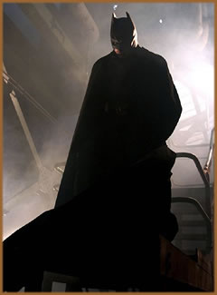

Livro
guia para a cultura dark mostra como ela atravessou
os
tempos e firmou-se entre as mais fortes influência do mundo
moderno.
O que Batman, o escritor Edgar
Allan Poe, o roqueiro Jim Morrisson e o cineasta Tim Burton
têm em comum? Todos eles são legítimos representantes
de uma visão de mundo que enxerga a realidade através
de um vidro obscurecido e vivem seus sentimentos de forma melancólica.
Em outras palavras: eles são góticos.
De uma maneira até mais original do que
aquele estereótipo do jovem que usa roupas pretas de couro,
adornos em forma de crucifixo e se isola dos outros freqüentando
cemitérios ou lugares abandonados. Se você ainda
não está convencido de que pode ser também
um "pouquinho" gótico, dê uma folheada
no caprichado livro Goth Chic - Um Guia Para a Cultura Dark,
escrito pelo jornalista inglês Gavin Baddeley. Dividido
em capítulos que mostram as influências do gótico
na construção da cultura moderna, o autor ilustra
seu guia com imagens bem conhecidas do grande público -
como os personagens Drácula, Wolverine,
Buffy - A Caça-Vampiros, ou os integrantes da
Família Addams. Mas não deixa de mostrar
de onde surgiu a inspiração de seus criadores ou
como esses ícones famosos na TV e no cinema moderno têm
raízes que remontam aos contos da Idade Média.
O que
é gótico?
Pode-se dizer que a visão gótica
do mundo sobreviveu a mudanças históricas e se manteve
viva graças ao seu caráter originalmente underground.
A cultura dark sempre se manteve viva graças ao número
de valiosos artistas que se identificam e contribuem com ela.
O inglês Gavin Baddeley cita nomes importantes no decorrer
dos dez capítulos de Goth Chic e explicita o que
tem em comum gente como o autor Lord
Byron, a escritora Susan Sontag ou o cineasta Oscar
Wilde (com seu O Retrato de Dorian Gray).
Logo na introdução, ele explica
como pessoas de épocas e comportamentos tão distintos,
podem estar unidas por uma mesma linha característica de
pensamento. "O gótico é uma barbárie
sofisticada. É a paixão pela vida coberta pelo simbolismo
da morte. É um amor cínico pelo sentimento. É
uma combinação de extremos como sexo e morte. É
utilizar a escuridão para iluminar", diz.
O livro aborda as principais características
e os nomes mais importantes do gótico. Defende também
que esse modo tão particular de ver o mundo está
praticamente no DNA humano. O indivíduo é quem escolhe
(insconscientemente) se vai - ou não - ficar imerso em
seu lado melancólico. Aqueles que produziram dentro desse
universo estão distribuídos em capítulos
que falam de música, cinema, literatura, HQs, moda e até
mesmo comportamento. Sexo e violência são elementos
fundamentais na construção da imagem gótica.
Além de ser um excelente guia para entender
o gótico muito além do conceito do senso comum,
Goth Chic - Um Guia Para a Cultura Dark traz farto material
fotográfico. Isso torna a obra ainda mais interessante
de ser folheada. Depois de Goth Chic, você irá
assumir seu lado mais obscuro. O livro Goth Chic pontua o universo
gótico e mostra como ele é importante na cultura
pop atual.
Trevas
no cinema, nos quadrinhos e na TV
Tim Burton é um dos cineastas que mais
ajudam a entender o conceito de gótico. Qualquer um de
seus filmes - de Edward Mãos de Tesoura (1990)
à animação Noiva-Cadáver
(2005) -, traz a morte como personagem fundamental da trama. E
não é à toa que o ator Johnny Depp é
o preferido para os longas de Burton: quando se pensa em astro
hollywoodiano, Depp tem o mesmo talento para o dark que Bella
Lugosi tinha para os filmes de terror do começo do século.
O
cinema e a TV contribuíram - e muito - para difundir essa
cultura. Seja por meio de produções de terror, seja
através de séries de humor negro, o gótico
se aproveitou dos meios de massa mais potentes para fincar suas
características na modernidade e influenciar gerações.
Quem lê as aventuras de anti-heróis como Spawn,
Constantine ou Batman pode não saber
que seus criadores se classificam entre legítimos representantes
da cultura gótica. Mas os elementos principais estão
lá: histórias mórbidas, ambientes sombrios,
heróis egoístas e vilões cuja maldade é
quase psicótica.
A vingança autodestrutiva é um poderoso
tema gótico. Pode ser vista nos quadrinhos de Batman,
Sin City, Motoqueiro Fantasma, ou em personagens
como O Corvo, Lobisomem e Drácula.
Entre os escritores, Stephen King, Edgar Allan Poe, Marquês
de Sade e, claro, Anne Rice, são exemplos da literatura
gótica.
As mulheres na cultura gótica ultrapassam
os limites da sensualidade e perigo típicos da femme
fatale noir. São literalmente agressivas, violentas.
Causam arrepios de medo e de desejo ao mesmo tempo. Um exemplo
é a Mulher-Gato, idealizada nas HQs (e que não
tem nada a ver com aquela interpretada por Halle Berry em filme
homônimo). Michelle Pfeiffer consegue transportar essa belicosidade
feminina para as telas como a Mulher-Gato de Batman - O Retorno
(1992). Outra atriz que se encaixava nessa definição
gótica da mulher foi a polonesa Ingrid Pitt, que se tornou
a mais famosa heroína de filmes de terror na década
de 70, sendo o mais popular deles o thriller A Condessa Drácula.
Em Goth Chic, o autor Gavin Baddeley trata Ingrid como
"a gata gótica sedenta por sangue".
A cor negra não é a única
característica que marca a influência gótica
na moda que vemos nas ruas por conta do inverno. O preto ocupa
grande destaque, mas o gótico também é marcado
pela presença de batas leves com decotes profundos e tecido
transparente. Elas são inspiradas nas camisolas que as
vampiras usavam para seduzir suas vítimas nas histórias
de terror. Casacos e camisas de estilo vitoriano também
têm um "quê" de dark. Faz parte do anti-herói
ser elegante, mesmo que trilhe caminhos obscuros da existência.
Por
Luciana Borges
Extraído
e adaptado
http://revistaepoca.globo.com